THE LITTLE THINGS
喜欢你，也喜欢我们的日常。
那些一起笑过的小事，慢慢攒成了「我们」。

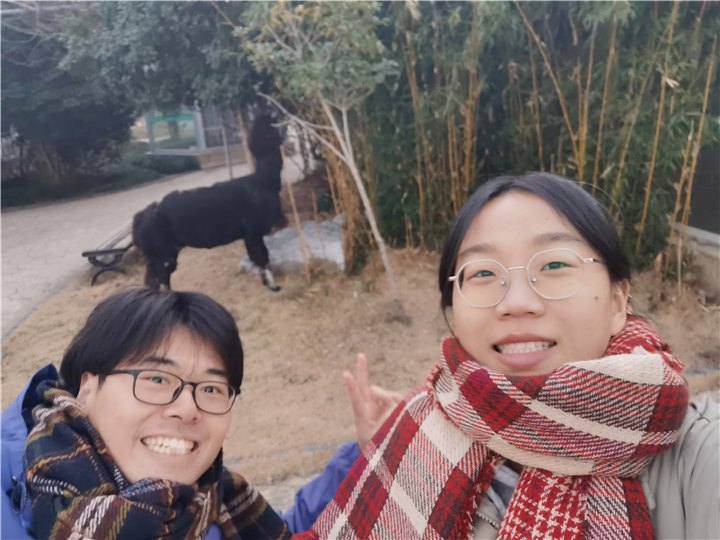
一起出门
风景很好，有你更好。

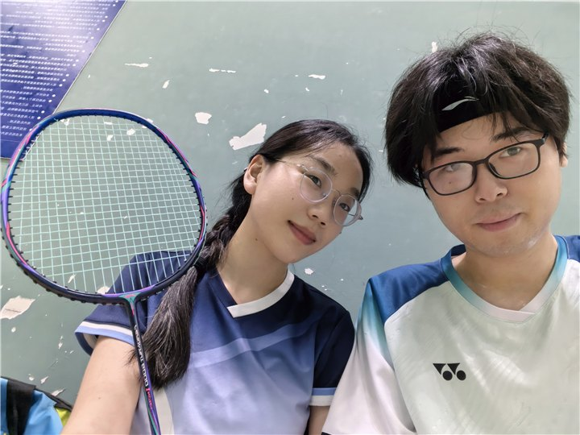
最佳拍档
生活这场双打，就选你啦。

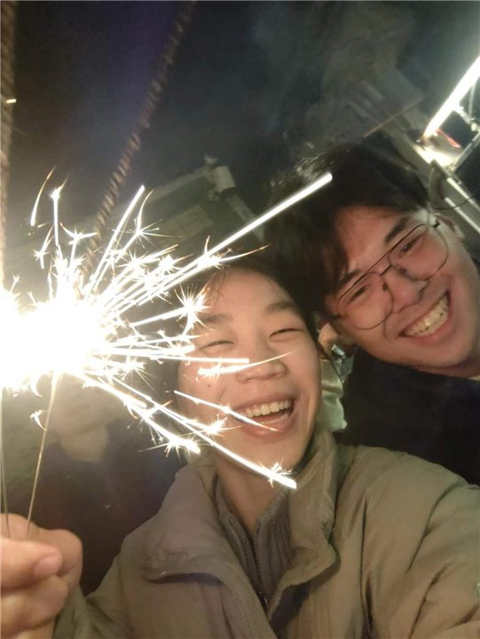
闪闪发光
把小小的快乐，过成大大的幸福。
不是每一天都特别，但每一天都有你。
OUR PHOTO DIARY
镜头里的我们。
16 个小小瞬间。
点开照片，再看久一点
山野之间，是我们。01

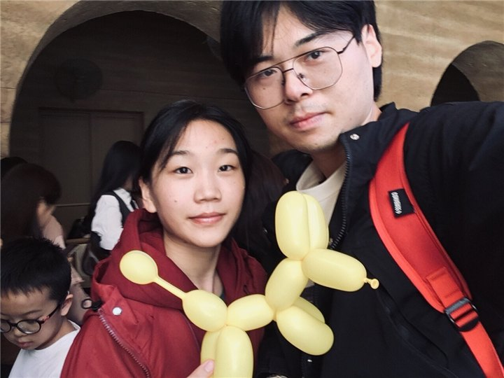
把快乐，变成小狗的形状。02
花在怀里，你在身边。03
今天，也是最佳拍档。04
一起出门，一起傻笑。05

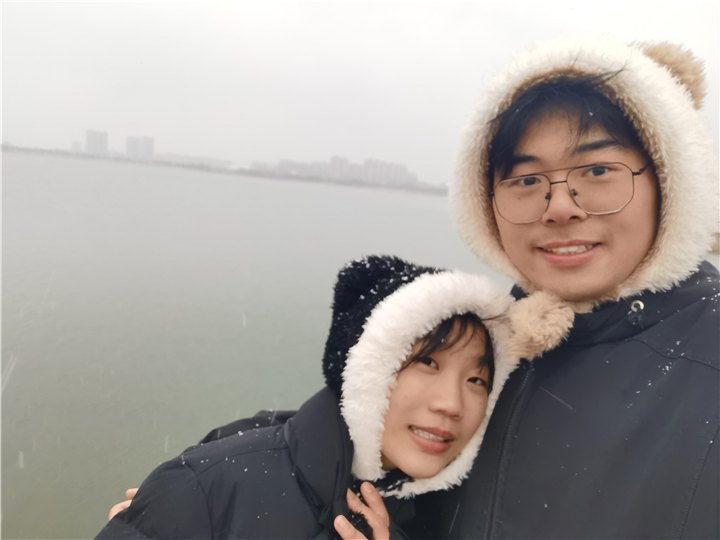
把冬天，过得暖一点。06
眼里有光，身边有你。07

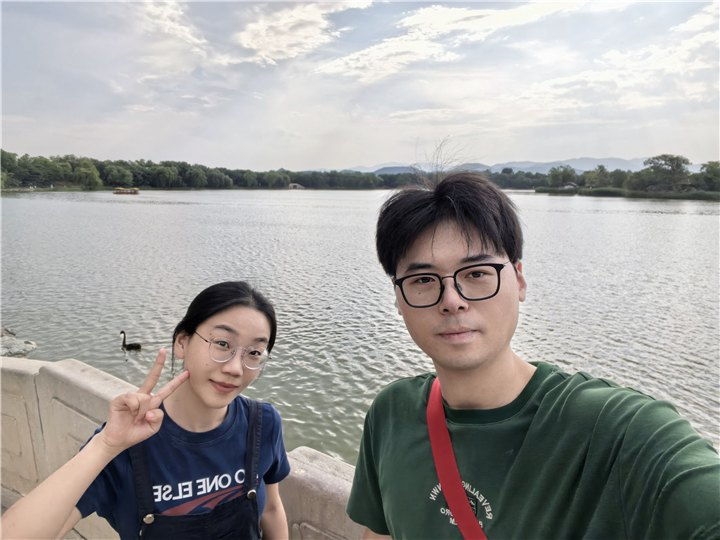
吹着风，慢慢走。08

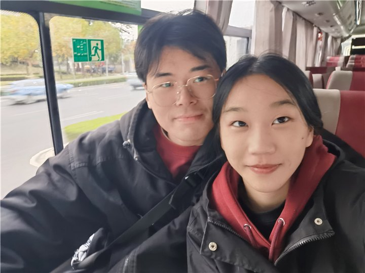
并肩坐着，就很开心。09

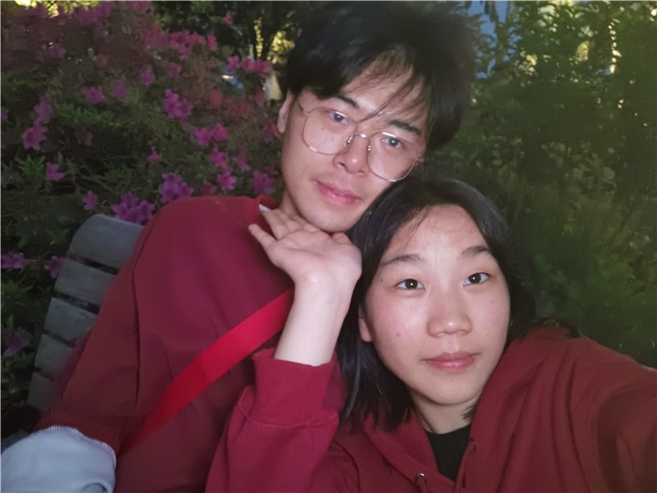
普通的一天，也想留念。10

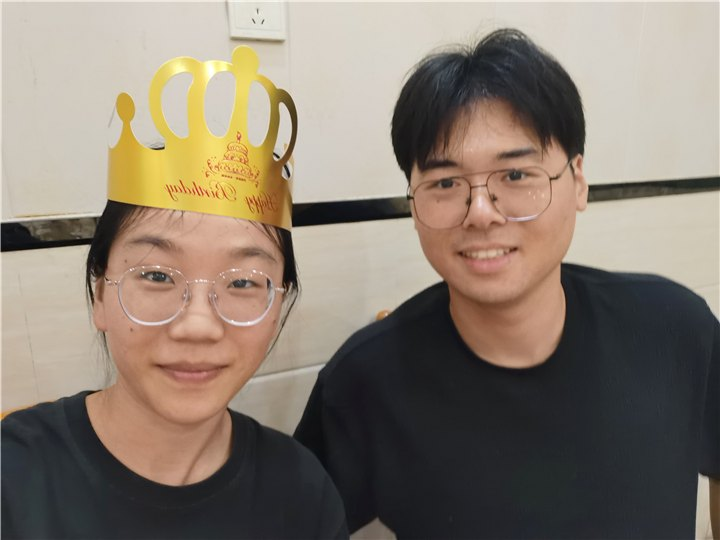
好日子，都想和你分享。11

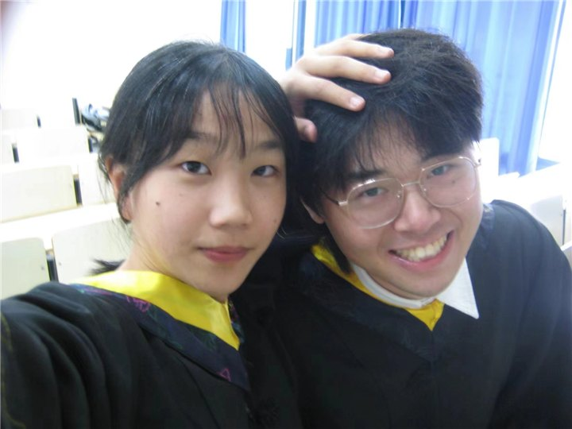
笑起来的时候，很像我们。12

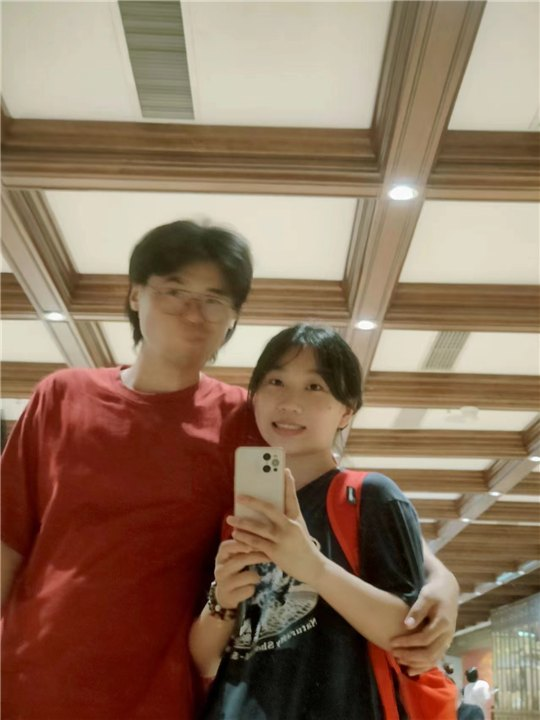
镜头里的，还是你和我。13

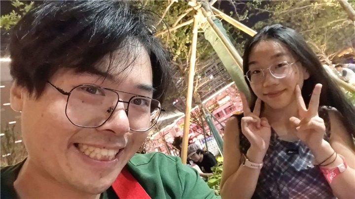
快乐不需要很大的理由。14

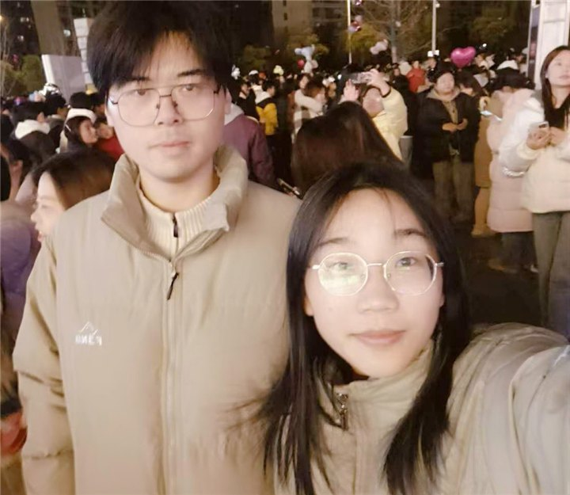
人海里，认定身边的你。15

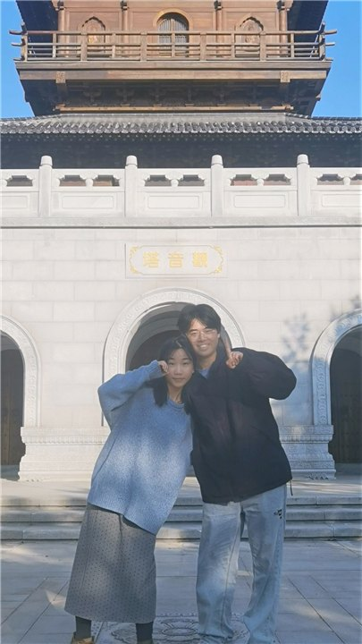
下一张合影，还是我们。16
相册会翻完，我们的故事还很长。
TO OUR NEXT CHAPTER
往后的每一天，
也请多多指教。
一起吃很多顿饭，走很长的路。
把普通的日子，过成我们喜欢的样子。
北海&中意
认真喜欢你，也认真期待我们的以后。
谢谢你，见证我们的小小幸福。